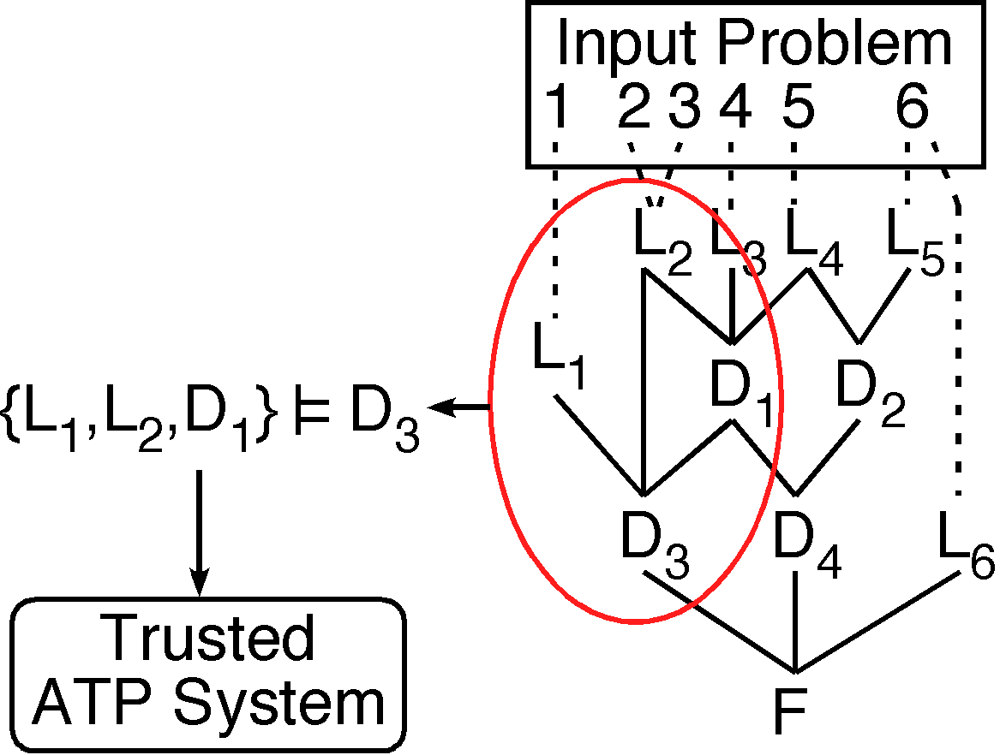

GDV - Semantic Derivation Verification

What, Why, How?
- Incompleteness, Soundness, Correctness
- Complexity and experience indicates bugs
-
Other techniques (we don't use directly)
Structural Verification
- Parents
- Cycles
- Refutations
- Constraints on splitting steps
- Use of assumptions
Semantic Verification
- Generate obligation for each formula (including leaves) in derivation
- Discharge using a trusted system (Otter!)
- Obligation determined by
SZS status
stored with each
annotated formula